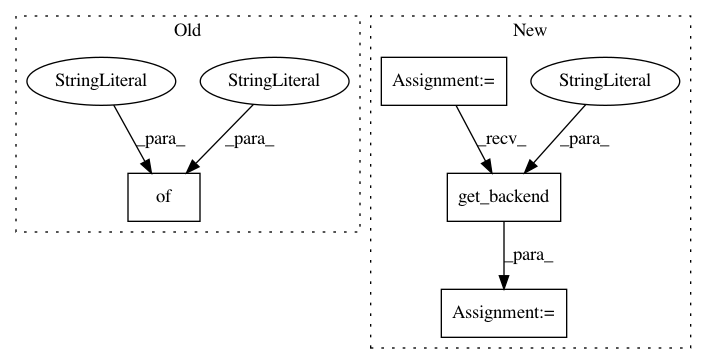

24ac276eff59fe6dc25934fc791c9817bc2c2c0f,test/test_vertex_cover.py,TestVertexCover,test_vertex_cover_vqe,#TestVertexCover#,79
Before Change
"algorithm": algorithm_cfg,
"optimizer": optimizer_cfg,
"variational_form": var_form_cfg,
"backend": {"name": "qasm_simulator"}
}
result = run_algorithm(params, self.algo_input)
print(result["eigvecs"][0])
x = vertexcover.sample_most_likely(len(self.w), result["eigvecs"][0])
After Change
"optimizer": optimizer_cfg,
"variational_form": var_form_cfg
}
backend = Aer.get_backend("qasm_simulator")
result = run_algorithm(params, self.algo_input, backend=backend)
x = vertexcover.sample_most_likely(len(self.w), result["eigvecs"][0])
sol = vertexcover.get_graph_solution(x)
oracle = self.brute_force()
In pattern: SUPERPATTERN
Frequency: 3
Non-data size: 4
Instances
Project Name: Qiskit/qiskit-aqua
Commit Name: 24ac276eff59fe6dc25934fc791c9817bc2c2c0f
Time: 2018-12-10
Author: liup@us.ibm.com
File Name: test/test_vertex_cover.py
Class Name: TestVertexCover
Method Name: test_vertex_cover_vqe
Project Name: Qiskit/qiskit-aqua
Commit Name: 24ac276eff59fe6dc25934fc791c9817bc2c2c0f
Time: 2018-12-10
Author: liup@us.ibm.com
File Name: test/test_clique.py
Class Name: TestClique
Method Name: test_clique_vqe
Project Name: Qiskit/qiskit-aqua
Commit Name: 24ac276eff59fe6dc25934fc791c9817bc2c2c0f
Time: 2018-12-10
Author: liup@us.ibm.com
File Name: test/test_graph_partition.py
Class Name: TestGraphPartition
Method Name: test_graph_partition_vqe